17 April 2022 • posted by Maha
Lares Hot Springs
Our next adventure took us to even higher mountains and valleys, to the small town of Lares, where we experienced hot springs for the first time in Peru.
Saturday early in the morning we were up and heading to our usual starting point, the local market, to get a few supplies and start our weekend adventure ∼ 2h20 north from our village. From Pisac we took a coletivo to Calca and afterwards a van taxi to Lares.
Transportation logistics
‐ Coletivo Pisac to Calca: 2 Soles per person / 25 minutes ride
‐ Coletivo Calca to Lares: 13 Soles per person / 1h45 minutes ride
The first 30 minutes of the ride we rode mostly in a zig-zag fashion, always upwards and whenever we looked back, the city of Calca would get more and more hidden under the clouds below. Once we reached more flat roads the view started to open up with large fields and small settlements at the mountains' bases, and here is where we started to see a lot of alpacas running freely.
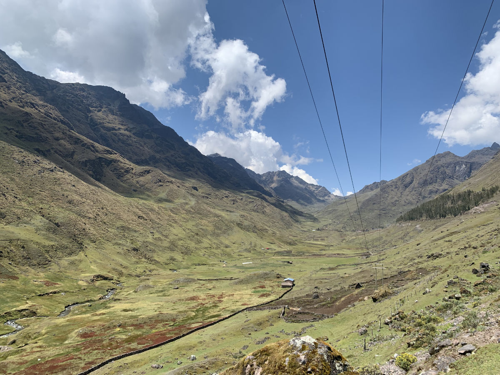
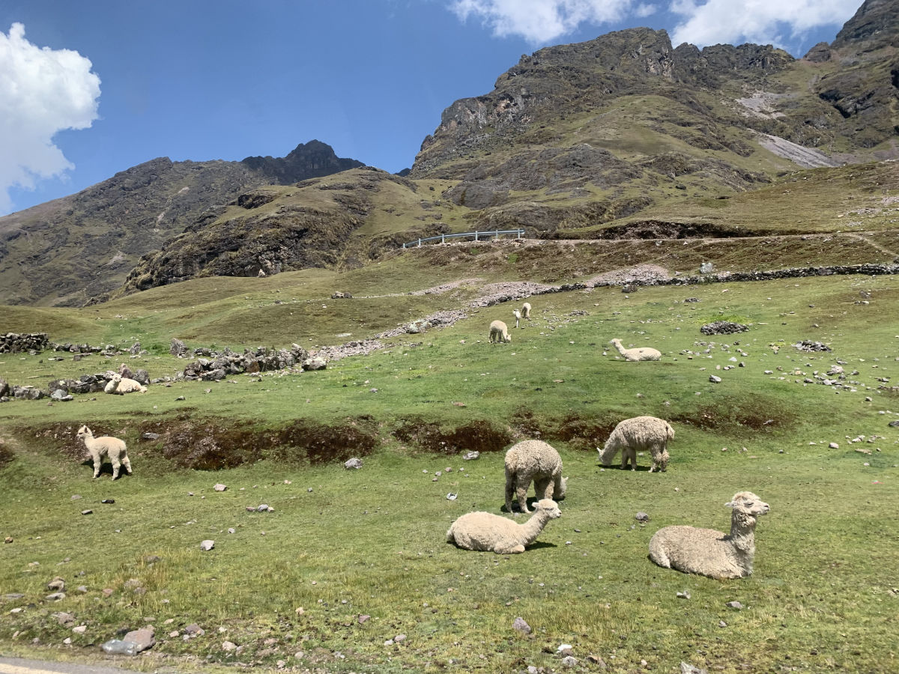
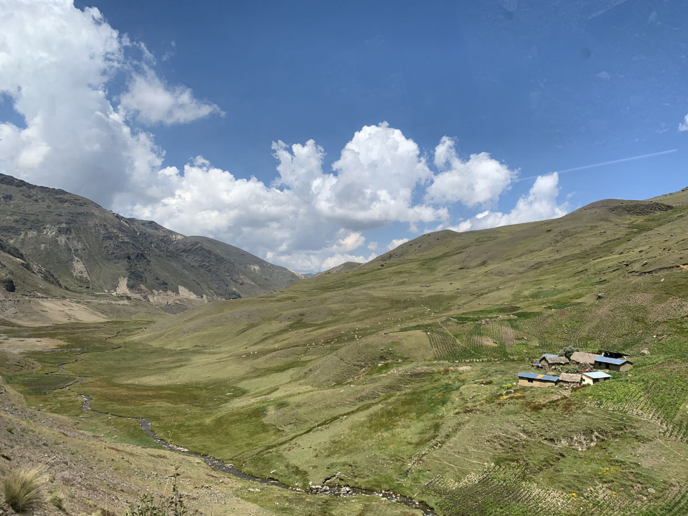
From this point on the road becomes narrower, fitting a single car for most of the path, still with zig-zags but now the valleys are much wider and the mountains much higher all around. The morning sun above blessed us with clear views throughout the whole way, making the colours in the valley very vibrant. Every now and then we would pass by very small settlements, with their own waterfalls dropping its waters directly on the road side and down the valleys there were always large amounts of alpacas to see walking by the narrow streams of rivers. At some point it became visible in the distance some mountain peaks covered with the whitest snow and I am almost certain it was the Sahuasiray mountain, at almost 6.000m above sea level.
This was one of the most beautiful and scenic roads I've ever been until today and just for this ride the trip was already worth it.
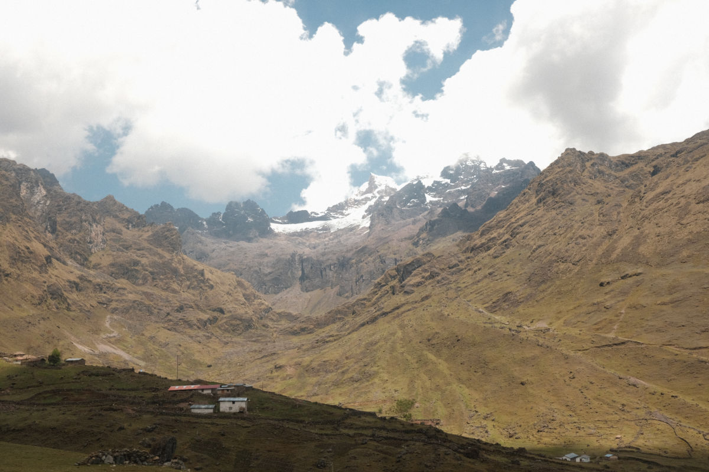
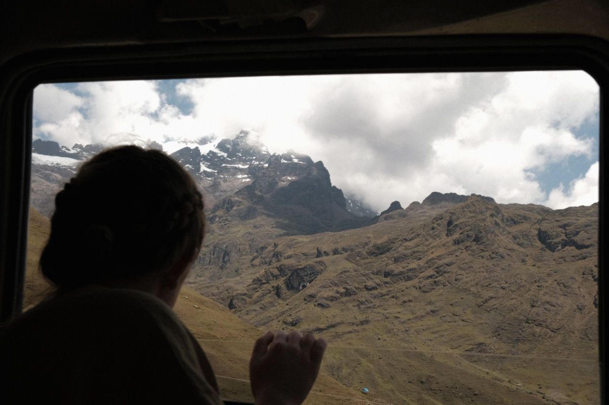
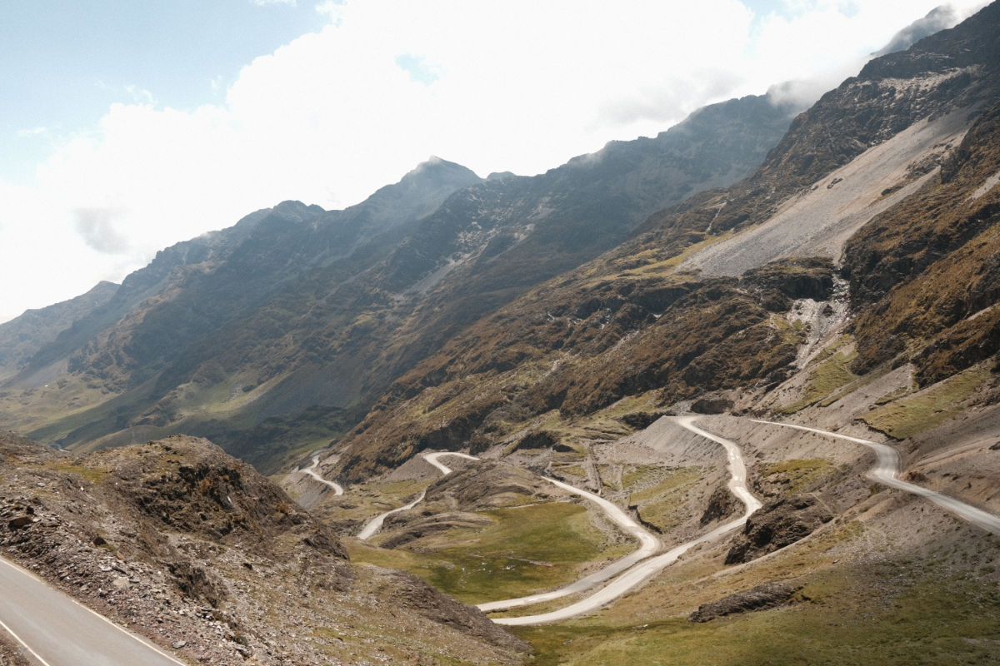
After around 2h20 ride, a lot of zig-zag roads soundtracked by Peruvian music being DJ'd by our driver we arrived at the very small town of Lares. There we did not linger for too long because our main destination was the Hot Springs, located at a 25 minutes walk from town. Arriving at the Hot Springs, through a stone path beside the rocky river, we were stopped at a small reception where we had to write down some personal information, pay the fee for the day ticket as well as the room rental fee, since we decided to sleep directly at the Hot Springs' lodge. This gave us access to the whole area, all the pools and facilities available.
Hot Springs prices
‐ Day ticket: 15 Soles (for foreigners) or 8 Soles (for locals)
‐ Hot Springs Lodge: 100 Soles per night (room with two double beds)
We quickly made our way up to the room, unpacked, put on our swim clothes and went to relax at the hot springs for the next 2 or so hours. Each pool seemed to have different water temperatures varying from 36°C up to a sizzling 45°C and they were all rich with a lot of minerals, which resulted in a brown-ish water colour. At first we tried a few different pools to find the one with the most comfortable temperature for that sunny day and every now and then, between sips of water, we would jump into the cold pool to refresh. And so we spent most of our day, relaxing at the pools, enjoying the view and the flute music on repeat until our bellies started to roar with hunger. Inside the Hot Springs area there is also an eating room, as it was called, where a couple of locals would come up and serve meals at designated times. We went for the typical dish of rice, salad, fried eggs and bananas.
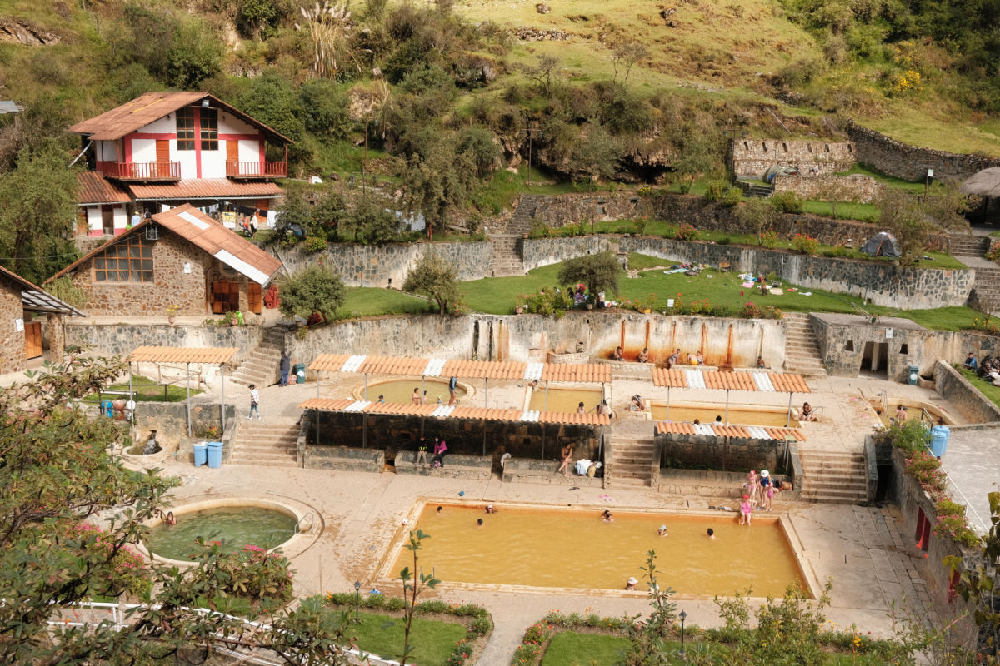
With our bodies very relaxed and hunger taken care of, we decided we needed a break from the same 10 flute songs playing on repeat, so we climbed over the stone walls of the area and went for a walk up to some corn fields that looked very much like a path down to The Shire. We did not walk too far until we found a very nice spot by a grassy area overlooking fields and the rocky river below. There we sat down and chilled for a while eating nuts and besteiras, chatting and appreciating the views, sounds and smells around us.
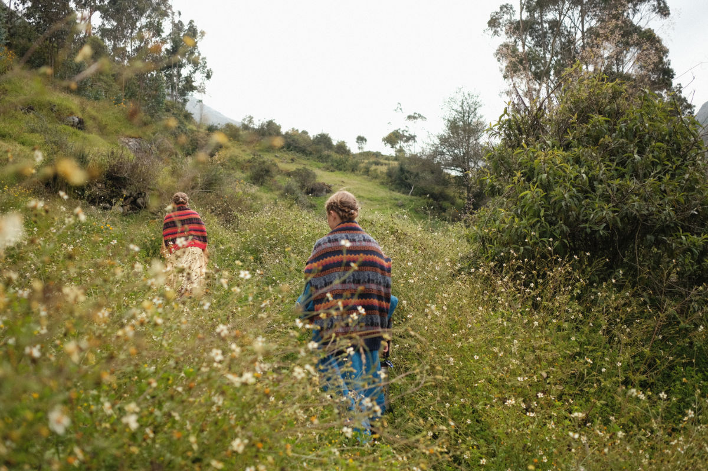
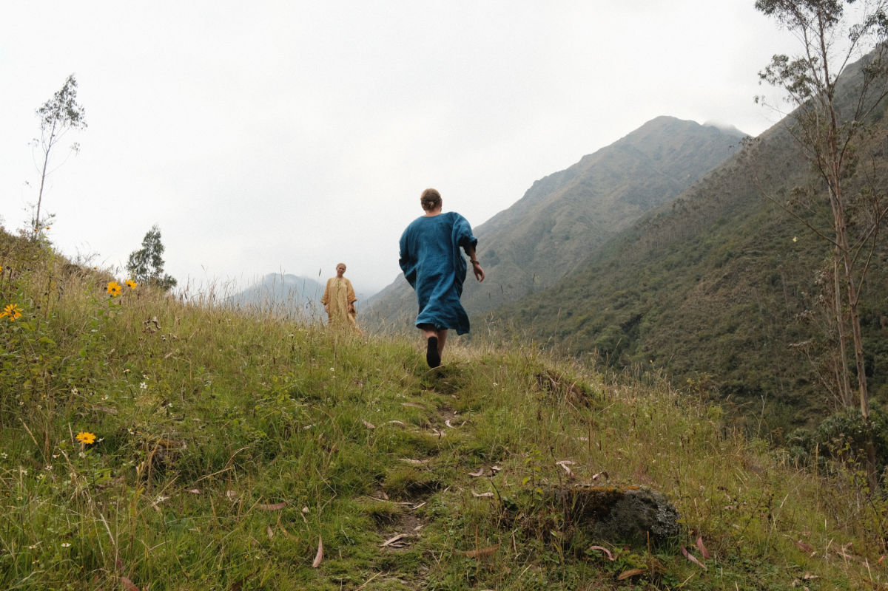
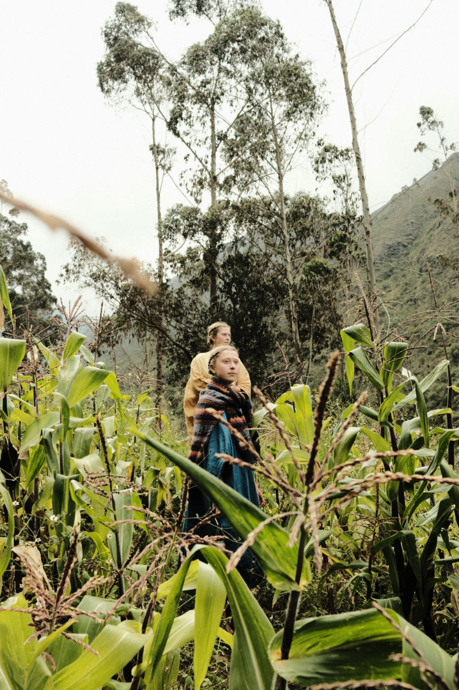
Back at the springs we realised that time had stopped and it was only 16:00, so we headed back into the warmth of the pools and chilled for another couple of hours. As the sun hid behind mountains, clouds started to form above and around us, making the night come quickly. With our fingers and toes looking all wrinkly but bodies more relaxed than ever, we headed back to our room for one final small meal consisting of fruits and then bed.
The next morning we woke up early as usual and before any breakfast we were already warming ourselves up in the springs. At around 9:00 we went on a hunt for breakfast knowing we should be back at 10:00 for our check out. With breakfast done and all checked out, we walked back to Lares. Since it was Easter Sunday, we peeked at the local church to see what was going on and then, after meeting one single Belarusian with his daughter at the tiniest town of Lares (who would've thought), we took our taxi back to Calca. The ride back was even better because the Sahuasiray mountains had less clouds and the snowy peaks were much more visible and the driver was also very kind to give us a quick stop at the highest point of the road, at 4.630m for a couple of photos.
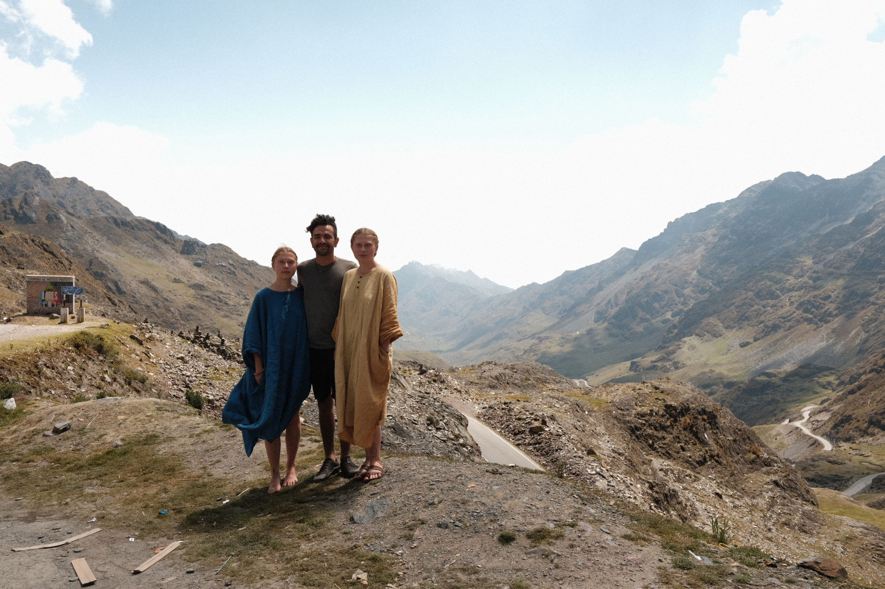